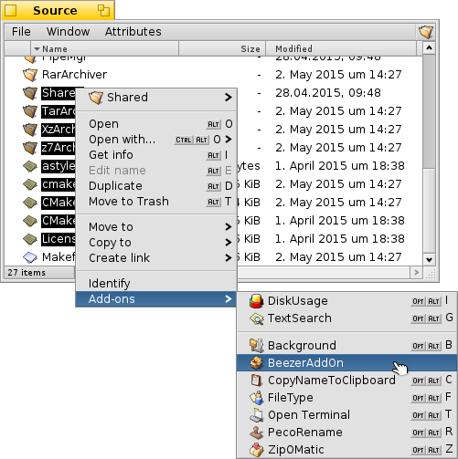
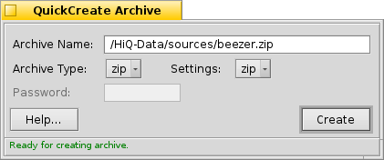

© 2011 Ramshankar
| QuickCreate Archive (Tracker AddOn) |
The QuickCreate Archive is a Tracker add-on that lets you create archives with minimal clicks :) The basic idea was to do a replacement for Zip-O-Matic but instead of just supporting zip format alone, QuickCreate would allow control over the format, and all the options that are supported in Beezer.
The QuickCreate Archive is actually a sort of hack. It resides within Beezer but is invoked using a Tracker add-on. You cannot launch QuickCreate explicitly from Beezer as it isn't listed under "Tools". This is not what it is meant for and hence isn't listed there.
How to Use
Using QuickCreate is very similar to using Zip-O-Matic. Here's a quick run-through in anycase...

- In Tracker, select the files you want to archive.
- Right-click and choose Add-Ons –> Beezer as shown in the picture above
- Now you are all ready to archive the files you have chosen, and the QuickCreate window will be shown as shown in the picture below
 Archive NameArchive Type
This shows the path and name of the Archive that will is to be created. You can chop and change elements of the path (such as modifying destination directories, and file name).
Settings
Allows you to choose what format archives you are going to make. Please note, as always, the necessary binaries needs to be installed in your system and the "workers" folder must have valid (non-broken) links to the binaries.
Password
For the chosen archive type, this is the list of available settings. Usually, you needn't keep changing these but in cases where you need to alter the options before creating the archive (such as modifying compression level, modifying storage of attributes etc.) you need to use this.
The status line
For those archive types that supports passwords (and supported by Beezer) you can input passwords. Currently, zip passwords are not supported due to the nature of the zip binary. But in anycase for real security purposes you should use a full-fledged encryption tool such as Cryptic for BeOS.
The status line at the very bottom of the QuickCreate window shows you some information to assist you in creating archives. For example, if the archive name chosen already exists, the status line shows a warning text reminding you the existing file will be overwritten and so on.
Once you are all set to create an archive just press ENTER or hit the "Create" button!! Cancelling the operation is allowed, but doing so will almost always delete the incomplete archive rather than get an archive with partially added files....
! Tip
You can specify the default archive type to make the quick create process even faster! That can be done from Preferences: Miscellaneous.
| The other way of creating archives | Welcome window |